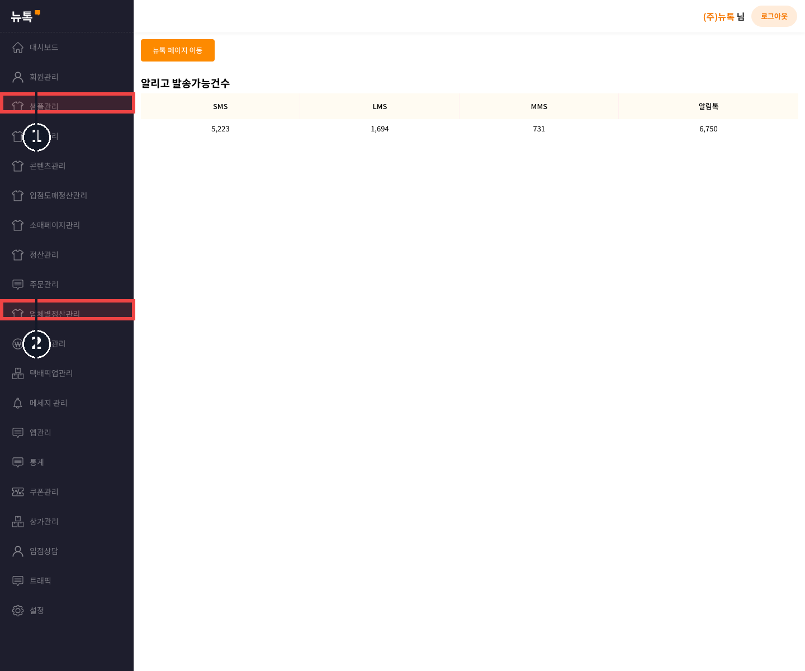
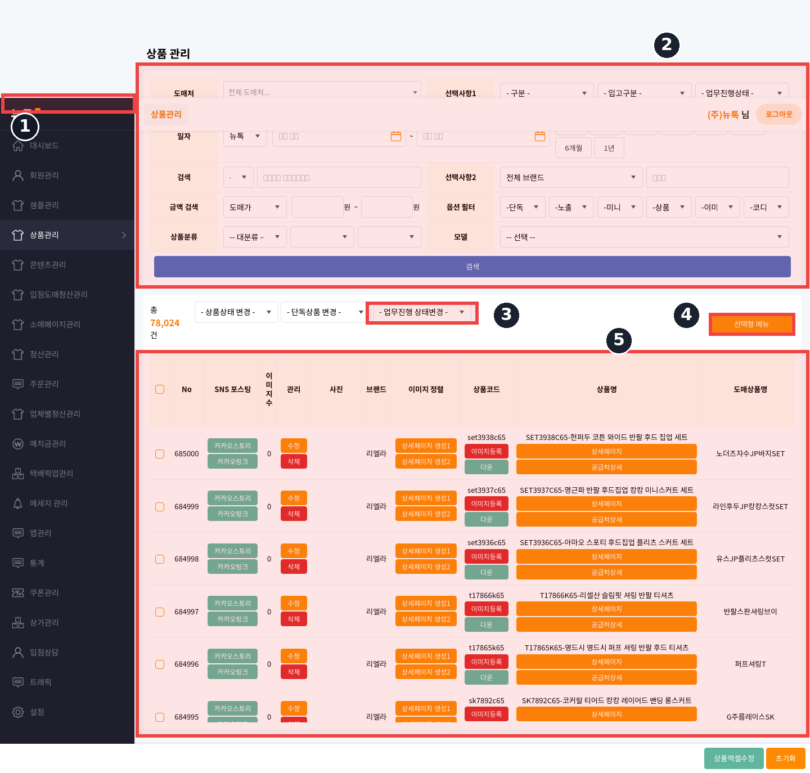
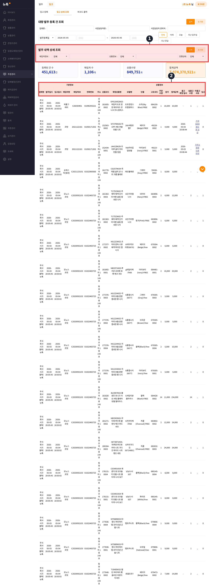

기존 V1 상품관리에서 이미 생성 중인 사방넷 엑셀을 유지하고, 그 결과물을 사방넷 관리자에 자동 업로드하는 작업 레이어를 추가하는 적용안입니다. v1.2에서는 pick.newtalk.kr 실제 상품관리 화면 캡처 기준으로 반영 위치를 다시 정리했습니다.
V1에 먼저 적용 가능합니다. 현재 V1에는 선택 상품을 사방넷 엑셀로 만드는 함수와 사방넷 컬럼 매핑이 이미 존재하므로, 엑셀 생성 로직을 새로 만들 필요는 없습니다. 우선순위는 1단계: 기존 엑셀 생성 안정화, 2단계: 자동 업로드 작업 큐 추가, 3단계: 실패 로그와 재시도 UI 추가 순서가 맞습니다.
자동 업로드는 사방넷 공식 API 연동이 확인되기 전까지 브라우저 자동화 방식으로 설계하되, V1 PHP 5.4 코드 안에 무거운 자동화 엔진을 직접 넣지 않고 서버 내부 작업 프로세스로 분리합니다.
| 구분 | 확인 내용 | 기획 반영 |
|---|---|---|
| 운영 루트 | /home/danharoo/www가 V1 운영 경로입니다. /var/www/newtalk는 현재 서버에 없는 경로로 확인했습니다. |
V1 적용 문서와 이후 코드 변경 기준 경로는 /home/danharoo/www로 고정합니다. |
| 사방넷 엑셀 생성 | application/controllers/products.php의 goods_select_excel_make()가 선택 상품을 조회하고 goods_excel_data() 결과를 엑셀 행으로 기록합니다. |
자동 업로드는 이 함수가 만든 엑셀 파일을 입력값으로 받아야 합니다. 상품 필드 매핑을 중복 구현하지 않습니다. |
| 컬럼 매핑 | supplier/config/autoscrap.php와 운영 컨트롤러 설정에 사방넷 컬럼 A부터 CC 및 확장 컬럼 매핑이 존재합니다. |
사방넷 업로드 파일 구조는 기존 매핑을 우선 신뢰합니다. 새 자동화는 파일 전달과 결과 수집만 담당합니다. |
| 상세 설명 치환 | goods_excel_data() 내부에 사방넷 엑셀 상품명 치환 로직이 있고, 2026-02-12 수정 이력으로 정규식 기반 보완이 반영되어 있습니다. |
자동화 전 단계에서 상세 HTML 치환 결과를 검증하는 사전 점검 항목을 둡니다. |
| 다운로드 구조 | goods_select_zip_down()에 gb == 'E' 분기가 있으나, 현재 E 분기 다운로드 변수는 주석 처리된 상태입니다. |
자동 업로드 전 수동 다운로드 경로를 먼저 복구하거나, 최소한 생성 파일 경로를 명확히 반환하도록 정리해야 합니다. |
기존 상품관리, 엑셀 생성, 텍스트/이미지 다운로드 기능을 변경하지 않고 자동 업로드 버튼을 추가합니다. 실패해도 기존 수동 방식으로 즉시 우회할 수 있어야 합니다.
V1은 상품 선택, 엑셀 생성, 작업 등록, 로그 조회만 담당합니다. 사방넷 로그인과 업로드는 별도 워커가 처리합니다.
작업마다 선택 상품 수, 생성 파일명, 업로드 성공 수, 실패 사유, 사방넷 응답 화면 캡처 또는 텍스트 로그를 남깁니다.
goods_select_excel_make()를 호출해 사방넷 업로드용 XLS를 생성합니다.사방넷 자동업로드가 생성 파일을 작업 큐에 넣습니다.| 화면 위치 | 추가 요소 | 동작 | 운영 메시지 |
|---|---|---|---|
| 상품관리 목록 상단 또는 기존 엑셀 버튼 근처 | 사방넷 자동업로드 | 선택 상품을 기준으로 기존 엑셀 생성 함수를 실행한 뒤 작업 큐에 등록합니다. | “선택 상품 N개 자동 업로드 작업을 등록했습니다.” |
| 같은 버튼 영역 | 사방넷 엑셀만 다운로드 | 자동화 실패 또는 사방넷 장애 시 기존 수동 처리로 돌아갑니다. | “자동 업로드가 실패하면 이 파일로 직접 등록할 수 있습니다.” |
| 상품관리 하단 또는 별도 팝업 | 최근 업로드 작업 목록 | 대기, 진행, 성공, 실패 상태와 처리 건수를 표시합니다. | “실패 항목은 상세 로그에서 원인을 확인한 뒤 재시도하십시오.” |
| 작업 상세 | 실패 행/상품코드 목록 | 사방넷 업로드 결과에서 실패 행과 메시지를 저장하고 재시도 대상을 분리합니다. | “가격, 필수 컬럼, 이미지 URL, 카테고리 오류를 먼저 확인하십시오.” |
/products/sabangnet_upload_job_creategoods_select_excel_make() 흐름을 재사용하거나 파일 생성 공통 함수를 분리sabangnet_upload_jobs: 작업 기본 정보sabangnet_upload_job_items: 상품별 결과sabangnet_upload_logs: 단계별 로그pending, running, success, partial_failed, failed, cancelled| 테이블 | 핵심 컬럼 | 목적 |
|---|---|---|
sabangnet_upload_jobs |
id, user_id, status, selected_count, success_count, failed_count, excel_path, created_at, started_at, finished_at |
작업 단위 상태 관리 |
sabangnet_upload_job_items |
job_id, goods_master_id, goods_code, row_no, status, message |
상품별 성공/실패 추적 |
sabangnet_upload_logs |
job_id, level, step, message, artifact_path, created_at |
장애 분석과 재처리 근거 보관 |
| 단계 | 작업 | 완료 기준 | 위험도 |
|---|---|---|---|
| 1단계 | 기존 사방넷 엑셀 생성 파일 경로와 다운로드 분기 정리 | 선택 상품 1건, 10건, 100건으로 XLS 생성 및 수동 다운로드 확인 | 낮음 |
| 2단계 | 작업 큐 테이블과 V1 작업 등록 버튼 추가 | 자동 업로드 버튼 클릭 시 작업 ID가 생성되고 상태가 pending으로 보임 |
중간 |
| 3단계 | 서버 내부 자동 업로드 워커 구현 | 테스트 계정으로 사방넷 로그인, XLS 업로드, 결과 로그 수집 성공 | 중간 |
| 4단계 | 실패 행 파싱과 재시도 기능 | 필수값 누락 상품을 의도적으로 넣었을 때 실패 상품만 재시도 가능 | 중간 |
| 5단계 | 운영 반영과 모니터링 | 실운영 상품 소량 업로드 후 성공률과 로그 확인, 수동 우회 유지 | 운영주의 |
| 검증 항목 | 확인 방법 | 실패 시 조치 |
|---|---|---|
| 엑셀 필수 컬럼 | A 상품명, F 자체상품코드, J 상품분류, Z 판매가, AQ 상세설명 등 사방넷 필수값 비어 있음 여부 확인 | 업로드 등록 전 차단하고 누락 상품 목록 표시 |
| 이미지 URL | 대표이미지와 부가이미지 URL이 HTTP 200을 반환하는지 샘플 검사 | 해당 상품은 자동 업로드 제외 후 수동 검수 대상으로 분리 |
| 상세 HTML 치환 | 단하루 상품명이 사방넷용 상품명으로 치환됐는지 AQ 상세설명 샘플 검사 | 기존 2026-02-12 치환 로직 기준으로 재생성 |
| 사방넷 세션 | 워커가 로그인 성공 후 상품 엑셀 업로드 화면까지 진입하는지 확인 | 자동 업로드 중지, 수동 다운로드 링크 노출 |
| 중복 등록 | 동일 상품코드가 진행 중 또는 성공 작업에 포함됐는지 확인 | 중복 작업 차단 또는 CEO 승인 후 재업로드 |
| 위험 | 원인 | 대응 |
|---|---|---|
| 사방넷 화면 변경 | 브라우저 자동화는 외부 화면 DOM 변경에 영향을 받습니다. | 업로드 단계별 셀렉터 실패 로그를 남기고 자동으로 수동 모드로 전환합니다. |
| 중복 상품 등록 | 같은 상품코드를 짧은 시간에 반복 업로드할 수 있습니다. | 진행 중 작업과 최근 성공 작업의 상품코드를 비교해 중복 차단합니다. |
| V1 PHP 5.4 호환성 | 운영 V1은 오래된 PHP/CodeIgniter 구조라 신규 라이브러리 도입이 부담입니다. | V1에는 얇은 등록 API만 추가하고, 워커는 별도 런타임으로 분리합니다. |
| 필수값 누락 | 기존 상품 데이터의 카테고리, 가격, 이미지, 상세설명 일부가 비어 있을 수 있습니다. | 업로드 전 사전검증에서 차단하고 실패 상품만 별도 목록화합니다. |
gb == 'E' 분기와 실제 생성 파일명 불일치를 정리합니다.| 파일 | 변경 내용 | 비고 |
|---|---|---|
/home/danharoo/www/application/controllers/products.php |
엑셀 생성 결과 반환 공통화, 자동 업로드 작업 등록 엔드포인트 추가, 작업 상태 조회 엔드포인트 추가 | 기존 goods_select_excel_make(), goods_excel_data() 흐름을 재사용 |
/home/danharoo/www/application/views/... |
상품관리 화면에 자동 업로드 버튼, 작업 상태 팝업, 수동 다운로드 링크 추가 | 실제 상품관리 뷰 경로는 버튼 적용 전 최종 재확인 필요 |
/home/danharoo/www/application/models/... |
작업 큐 저장/조회 모델 추가 | 기존 모델 네이밍 규칙 확인 후 반영 |
/home/danharoo/www/scripts/sabangnet_upload_worker.* |
사방넷 로그인, 파일 업로드, 결과 파싱 워커 추가 | PHP 5.4 본 요청과 분리 |
| 항목 | 권장안 | CEO 확인 필요 |
|---|---|---|
| 사방넷 접속 방식 | 초기에는 브라우저 자동화, 공식 API 확인 시 API 전환 | 사방넷 계정/권한을 테스트용으로 분리할 수 있는지 확인 필요 |
| 운영 반영 범위 | 버튼은 관리자 또는 지정 권한 사용자에게만 노출 | 자동 업로드 권한을 부여할 사용자 역할 확인 필요 |
| 대량 처리 정책 | 초기 20건 제한, 안정화 후 100건 단위 확대 | 사방넷 업로드 제한과 운영 업무 흐름 확인 필요 |
제공받은 CS 계정으로 pick.newtalk.kr에 로그인해 실제 관리자 화면을 확인했습니다. 사방넷 자동 업로드의 주 반영 화면은 /Product/product_mng의 상품관리 화면입니다. 기존 운영자는 이 화면에서 상품을 검색하고 행을 선택하며, 이미 선택형 메뉴 안에 사방넷등록엑셀파일다운 기능이 존재합니다.
| 화면 | 현재 URL | 반영 위치 | 추가 UI |
|---|---|---|---|
| 관리자 대시보드 | /root/home |
좌측 상품관리 메뉴 |
사방넷 자동전송 빠른 진입 메뉴를 상품관리 하위에 추가 |
| 상품관리 | /Product/product_mng |
상단 검색 영역, 업무진행 상태변경 드롭다운, 우측 선택형 메뉴, 상품 행 목록 |
선택 상품 사방넷 자동업로드, 오늘 신규상품 자동업로드, 작업 로그 |
| 입고 상세 조회 | /root/product_store_list |
입고/발주 데이터 기반 보조 확인 화면 | 상품코드, 수량, 입고 상태 확인 후 상품관리 자동업로드로 이동 |
| 바코드 조회 | /root/product_barcode |
대량 등록 버튼 옆 |
사방넷 전송 전 바코드 누락 점검 버튼 |


| 라벨 | 화면 위치 | 반영 방식 | 동작 |
|---|---|---|---|
| 1 | 좌측 상품관리 메뉴 |
하위 메뉴로 사방넷 자동전송 추가 |
작업 현황/로그 화면으로 진입합니다. |
| 2 | 상단 검색 조건 영역 | 업무진행상태=사방넷등록대기, 기간, 도매처 조건으로 대상 필터링 |
오늘 신규상품 또는 검색 결과 기준으로 업로드 대상을 좁힙니다. |
| 3 | 업무진행 상태변경 드롭다운 |
사방넷등록대기(H1), 사방넷등록완료(H2) 상태와 자동 연동 |
업로드 전후 상태를 기존 운영 상태값으로 관리합니다. |
| 4 | 우측 선택형 메뉴 |
기존 사방넷등록엑셀파일다운 바로 아래에 사방넷 자동업로드/전송 추가 |
선택한 상품만 작업 큐에 등록합니다. 기존 수동 다운로드는 유지합니다. |
| 5 | 상품 행 목록 | 좌측 체크박스 선택 상품 기준으로 실행 | 상품코드, 상품명, 옵션, 이미지, 가격, 매입처ID 검증 후 엑셀 생성 및 업로드합니다. |

| 영역 | 현재 기능 | 추가 기능 | 동작 |
|---|---|---|---|
| 좌측 메뉴 | `상품관리` 하위에 발주, 입고, 바코드 출력 메뉴가 존재합니다. | `사방넷 자동전송` 메뉴 추가 | 작업 현황 페이지로 이동합니다. 관리자/지정 직원만 노출합니다. |
/Product/product_mng 상단 |
도매처, 입고구분, 업무진행상태, 기간, 브랜드/옵션 검색 필터가 존재합니다. | 사방넷등록대기 필터와 오늘 신규상품 자동업로드 버튼 추가 |
검색 결과를 사방넷 업로드 후보로 만들고, 실행 전 대상 건수를 확인합니다. |
| 상품/발주 테이블 | 상품코드, 확정상품명, 모델명, 옵션, 수량, 원가, 진행상태가 표시됩니다. | 전송 상태 컬럼 또는 행 상태 배지 추가 | `대기`, `검증실패`, `업로드중`, `전송완료`, `재시도필요` 상태를 표시합니다. |
| 작업 로그 패널 | 현재 별도 자동전송 로그 UI는 없습니다. | 최근 20건 작업 이력, 성공/실패 건수, 실패 사유, 재시도 버튼 추가 | 사방넷 로그인 실패, 엑셀 업로드 실패, 마켓전송 실패를 건별로 확인합니다. |
/root/product_store_list |
입고/발주 내역과 상품코드, 상품명, 수량, 실출고 상태가 표시됩니다. | 상품관리 자동업로드 화면으로 이동하는 보조 링크 추가 | 입고/발주 데이터 확인 후 실제 업로드 실행은 /Product/product_mng에서 처리합니다. |
상품관리 화면에서 도매처, 기간, 업무진행상태 조건을 검색합니다.오늘 신규상품 자동업로드 또는 선택 상품 사방넷 자동업로드를 클릭합니다.바로 코드 적용에 들어간다면 1차 작업은 “엑셀 생성/다운로드 경로 정리 + 작업 큐 등록 화면”까지만 진행하는 것이 맞습니다. 사방넷 실제 업로드 자동화는 외부 사이트 로그인과 화면 변경 리스크가 있으므로, V1 운영 코드와 분리된 워커로 검증한 뒤 붙여야 합니다.
이 방식이면 기존 수동 업무는 유지되고, 자동화 실패 시에도 상품 등록 업무가 멈추지 않습니다. 또한 작업 로그가 남기 때문에 이후 V2에 동일한 구조를 옮길 때도 재사용 가능합니다.
/home/danharoo/www/application/controllers/products.php: goods_select_excel_make(), goods_excel_data(), goods_select_zip_down() 확인/home/danharoo/www/supplier/config/autoscrap.php: 사방넷 엑셀 컬럼 A-CC 매핑 확인/home/danharoo/www/reports/2026-02-12/20260212_0105_sabangnet_excel_test.md: 사방넷 엑셀 상품명 치환 테스트 이력 확인pick.newtalk.kr: 제공받은 CS 계정으로 로그인 후 /root/home, /Product/product_mng, /root/product_store_list 화면 캡처date 실측: 2026-05-05 13:02 KST